커스텀 스테이터스 바를 만들지 마라. 사용자들은 시스템이 제공하는 스테이터스 바의 일관성에 의존하고 있다. 당신 앱에서 스테이터스 바를 숨길 수는 있지만, 그 자리를 차지하는 커스텀 UI를 만드는 것은 적당하지 않다.
스테이터스 바 뒤에서 시작하는 스크롤 콘텐트를 만들지 마라. 사용자가 스크롤함에 따라, 앱 콘텐트와 스테이터스 바 영역안의 스테이터스 바 아이템들이 혼란스럽게 섞이는 것을 보고 싶지 않을 것이다. 사용자들에게 널찍함과 함께 최대한의 가독성을 보장하기 위해서, 스테이터스 바에 백그라운드를 줘서 그 뒤의 콘텐트가 보이는 것을 방지하라. 아래에 스테이터스 바를 통해 콘텐츠가 보이는 것을 막는 몇 가지 방법이 있다.
네비게이션 컨트롤러가 콘텐트를 표시하도록 하라. 네비게이션 컨트롤러는 자동적으로 스테이터스 바 백그라운드를 표시하므로 콘텐트 뷰가 스테이터스 바 뒤로 비치는 것을 방지한다. (네비게이션 컨트롤러에 대한 보다 자세한 정보는 "Navigation Controller"를 보라).)
집중을 방해하지 않는 커스텀 이미지-그라디언트 같은- 를 만들어서 스테이터스 바 뒤에 표시한다. 그 이미지가 스테이터스 바의 뒤에 있도록 보장하기 위해서, 뷰 컨트롤러를 이용해서 그 이미지가 스크롤링 뷰 위에 있도록 하거나 스크롤링 뷰가 그 이미지 뷰를 제일 위에 있도록 핀을 박아 유지하게 한다.
콘텐트를 스테이터스 바 영역(앱의 statusBarFrame 프라퍼티에 의해 정의되는 영역)을 피해서 배치시킨다. 이렇게 하면, 스테이터스 바 뒤에 있는 윈도우의 백그라운드 컬러를 단일 컬러로 제공해야 한다.
스테이터스 바 뒤에 산만한 콘텐트를 넣지 마라. 특히, 사용자가 콘텐트에 엑세스 하거나 컨트롤을 동작시키기 위해 스테이터스 바를 탭하는 것을 원하지 않을 것이다.
스테이터스 바를 완전히 숨기기 전에 다시 한 번 생각하라. 스테이터스 바는 투명하기 때문에, 보통의 경우 이것을 굳이 숨길 필요는 없다. 스테이터스 바를 완전히 숨기는 것은 사용자들이 시간을 확인하거나 와이파이 연결 상태를 확인하기 위해 당신 앱에서 나가야 한다는 것을 의미한다.
사용자들이 풀 스크린 미디어를 활발히 보고 있을 때 스테이터스 바-그리고 모든 앱의 UI- 를 숨기는 것을 고려하라. 만약 스테이터스 바를 숨겼다면, 사용자들이 한 번의 탭으로 스테이터스바(그리고 적당한 앱 UI)를 다시 꺼낼 수 있도록 하라. 어떤 강력한 이유가 없다면, 스테이터스 바를 다시 표시하는 커스텀 제스처를 정의하는 것을 삼가라. 사용자들은 그것을 발견하고 기억하는 것을 좋아하지 않는다.
스테이터스 바 컨텐트 컬러를 당신 앱과 어울리는 것으로 선택하라. 기본 모양은 어두운 콘텐트를 표시하는, 밝은 컬러의 앱 콘텐트 위에 올라가면 좋은 스테이터스 바가 나온다. 밝은 스테이터스 바 콘텐트는 어두운 컬러의 콘텐트 위에 좋다.
적당하다면, 네트워크 활동 인디케이터를 표시하라.네트워크 활동 인디케이터는 사용자에게 시간이 걸리는 네트워크 연결이 동작 중이라는 것을 보여주기 위하 스테이터스 바에 표시될 수 있다. 이 인디케이터를 구현하는 방법은 "Network Activity Indicator".를 보라.
네비게이션 바
네비게이션 바는 정보 계층을 따라 네비게이션을 할 수 있도록 해 주며, 부가적으로, 화면 콘텐트를 관리한다.
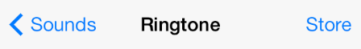
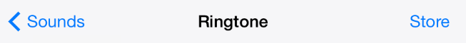
네비게이션 바는 :
반투명이다.
보통 앱 화면의 제일 위, 스테이터스 바 아래에 나타난다.
아이패드에서, 네비게이션 바는 스필릿 뷰 컨트롤러의 한 부분처럼, 화면 전체를 가로지르지 않는 뷰안에서도 표시될 수 있다.
아이폰이 방향을 바꾸면 자동적으로 그 높이를 변경할 수 있다.
아이패드에서는 모든 방향에서 동일한 높이를 유지한다.
다른 뷰들 간의 네비게이션을 가능하게 하고, -필요하다면- 뷰 안의 아이템을 관리하는 컨트롤을 제공하기 위해 네비게이션 바를 사용하다. 더 많은 컨트롤 세트를 제공해야 하고 네비게이션은 필요없다면, 대신 툴바 사용을 고려해 보라. (보다 자세한 정보는 Toolbar(142페이지)).
사용자가 네비게이션 계층에서 새로운 레벨로 가면, 두가지 일이 발생한다:
네비게이션 바 타이틀이 새로운 레벨의 타이틀로 변경된다.
바의 왼쪽 끝에 백 버튼이 나타나고, 이전 레벨의 타이틀이 레이블에 적힌다.
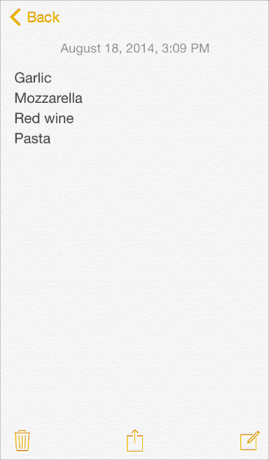
값을 더할 때는, 현재 뷰의 타이틀을 네비게이션 바의 타이틀로 사용하라. 네비게이션 바의 타이틀을 넣는 게 불필요해 보이면, 공란으로 남겨둘 수 있다. 예를들어, Notes 앱은 현재 노트에 타이틀을 적지 않는데, 콘텐트의 첫 줄이 사용자가 필요한 모튼 컨텍스트를 제공하기 때문이다.
앱의 최상위 레벨에서는 세그먼티드 컨트롤을 넣는 것을 고려해 보라. 이렇게 함으로서 당신의 정보 계층을 낮출 수 있다면, 사람들이 찾는 정보를 보다 쉽게 찾을 수 있기 때문에 매우 유용하다. 네비게이션 바에 세그먼티드 컨트롤을 사용한다면, 정확한 백 버튼 타이틀을 제공하도록 하라 ( 사용 가이드라인은 "Segmented Control"(페이지 185).)
필요하다면, 프롬프트를 사용해 사용자가 현재 화면에서 할 수 있는 것을 명확히 하라. 프롬프트는 네비게이션 바의 위쪽 근처에 나타나는 짧은 개요 문장이다. 예를 들어, Stocks 앱은 사용자들이 원하는 정보를 찾는 방법을 이해시키기 위해서 프롬프트를 사용한다.
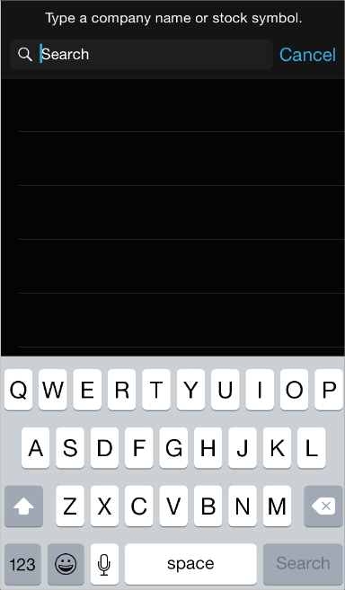
프롬프트를 사용할 필요가 있다면, 간결한 한 줄 문장과 마침표를 사용한다.
충분한 공간이 있다하더라도, 추가적인 컨트롤을 올려서 복잡한 네비게이션 바가 되지 않도록 하라. 일반적으로, 네비게이션 바는 뷰의 현재 타이틀, 백 버튼, 뷰의 콘텐트를 관리하는 하나의 컨트롤 이상을 포함하지 않아야 한다. 만약 네비게이션 바에 세그먼티드 컨트롤을 사용하면, 바는 타이틀도 표시하지 않고, 세그먼티드 컨트롤 외에 다른 어떤 컨트롤도 포함하지 않아야 한다.
텍스트로 타이틀된 버튼들은 그들 간에 충분한 공간을 가지도록 한다. 네비게이션 바의 완쪽 또는 오른쪽에 여러 바 버튼 아이템들 간에 충분한 공간이 없다면, 섞여 보여서 사용자들이 그것을 인식하는 데 어려움을 겪게 된다. 만약 버튼 타이틀들이 네비게이션 바 안에서 너무 가깝다면, UIBarButtonSystemItemFixedSpace를 사용해서 그 사이에 충분한 간격을 더하도록 하라 (이런 상수에 대해 더 알고 싶다면 UIBarButtonItem의 클래스 레퍼런스를 보라.)
가능한, 커스터마이즈 한 네비게이션 바가 앱 전체에 걸쳐서 일관되게 하라. 예를 들어, 불투명한 네비게이션 바와 반투명한 툴바를 함께 사용하지 말라. 또한, 같은 방향의 다른 화면들에서 네비게이션 바의 이미지, 컬러 또는 투명도를 변경하지 말라.
커스터마이즈한 백 버튼이 여전히 백 버튼처럼 보이도록 하라. 사용자들은 표준 백 버튼이 거기까지 온 정보의 계층 궤적을 되돌리도록 한다는 것을 알고 있다. 시스템이 제공하는 갈매기 모양을 커스텀 이미지로 대체하고 싶다면, 커스텀 마스크 이미지 역시 제공하도록 확인하라. iOS 7은 그 갈매기 모양을 장면이 전환되는 동안 버튼 타이틀이 나타나거나 사리지도록 보이게 하는 데 그 마스크 이미지를 사용한다.
아이폰에서, 장치의 반향 전환 시 발생하는 네비게이션 바의 높이 변화에 대비하라. 특히, 당신의 커스텀 네비게이션 바 아이콘들이 landscape 방향에서 나오는 얇은 바에 적당한지를 확인하라. 네비게이션 바의 높이를 프로그램적으로 지정하려 하지 말고; 대신에 당신의 콘텐츠가 잘 맞도록 보장하기 위해 UIBarMetrics 상수들을 이용하라.
툴바
A 툴바 는 화면이나 뷰에 있는 오브젝트와 관련된 액션을 수행하는 컨트롤들을 가진다.
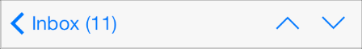
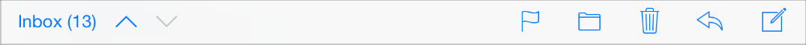
툴바는 :
반투명이다
아이폰에서는 항상 뷰나 화면의 아래에 나타나고,
아이패드에서는 위쪽에도 나타날 수 있다.
아이폰이 방향을 바꾸면 자동적으로 높이를 바꿀 수 있다.
아이패드는 모든 방향에서 동일한 높이를 유지한다.
사용자가 현재 컨텍스트에서 취할 수 있는 액션들의 세트를 제공하기 위해 툴바를 사용한다.
현재 컨텍스트에서 의미가 있는 가장 자주 사용하는 명령을 포함한다. 가능한, 이따금씩만 사용하는 명령을 제공하기 위해 툴 바를 사용하지 마라.
현재 컨텍스트에 대해 서로 다른 모드나 관점을 선택하도록 하려면 세그먼티드 컨트롤의 사용을 고려해보라. 앱 차원의 테스크나 모드를 보여주기 위해 툴 바에 세그먼티드 컨트롤을 사용하는 것은 좋은 아이디어가 아니다. 툴바는 현재의 화면이나 뷰에 특정한 것이기 때문이다. 앱의 주요 테스크, 뷰 또는 모드에 사용자들이 접근하도록 하려면, 탭 바를 대신 이용하라. 세그먼티드 컨트롤에 대해 자세히 알고 싶으면, "Segmented Control (185 page)를 보라; 탭 바에 대해 더 공부하고 싶으면, "Tab Bar"(page 145)를 보라.
툴바에 세개 이상의 아이템을 넣어야 한다면 아이콘을 사용하라. 텍스트 타이틀이 붙은 버튼은 아이콘 버튼보다 더 많은 공간을 사용하므로, 타이틀이 서로 겹치는 것을 피하기 어려울 수도 있다.
텍스트 타이틀이 붙은 버튼들은 그들 사이에 충분한 공간을 가지도록 하라. 만약 툴바의 두 개 이상의 버튼에 충분한 여백이 없다면, 텍스트 타이틀들은 겹쳐보여서 사용자들이 구별하기 어려울 수도 있다. 버튼 타이틀들이 툴바에서 너무 가깝게 보인다면, UIBarButtonSystemItemFixedSpace를 사용하여 적절한 여백을 넣어라. (자세한 사항은, "UIBarButtonItem 클래스 레퍼런스"를 보라.)
아이폰에서는 장치 방향 전환에 따른 툴바 높이 변화를 준비하라. 특히, 당신의 커스텀 툴바 아이콘들이 landscape 방향에서 나오는 얇은 바에 적당한지를 확인하라. 툴바의 높이를 프로그램적으로 지정하려 하지 말고; 대신에 당신의 콘텐츠가 잘 맞도록 보장하기 위해 UIBarMetrics/a> 상수들을 이용하라.
툴바와 네비게이션 바 버튼들
iOS는 빌트 인 앱에서 사용한 표준 툴바와 네비게이션 바 버튼들을 많이 제공하고 있다. 커스텀 바 아이콘을 디자인 하는 방법을 알고 싶으면, "Bar Button Icons"(페이지 212).를 보라. 툴바와 네비게이션 바의 아이템들은 tintColor 프라퍼티를 이용해 틴트될 수 있다.
콘텐츠를 리프레시 한다. (꼭 필요한 경우에만 사용하고 보통의 경우 자동으로 리프레시 하라)
재생
미디어 플레이나 슬라이드를 시작한다.
빨리감기
미디어 플레이나 슬라이드를 빨리 감는다.

일시멈춤
미디어 플레이나 슬라이드를 일시멈춤한다 (컨텍스트가 유지되는 것을 함축한다)
되감기
미디어 플레이나 슬라이드를 되감는다.
표 35-1에 있는 버튼들에 더하자면, 시스템이 제공하는 Edit, Cancel, Save, Done, Redo, Undo 버튼을 사용해서 편집 또는 다른 형태의 앱 내 콘텐트 다루기를 지원하기 위해 사용하라. 이 각각의 버튼들의 모양은 그 텍스트 타이틀에 의해 제공된다. 이 버튼들을 나타내는 심볼 이름을 찾고 싶다면, UIBarButtonItem 클래스 레퍼런스의 UIBarButtonSystemItem 문서를 보라.
마지막으로, 시스템이 제공하는 info 버튼 역시 툴바에 사용할 수 있다:
탭 바
탭 바는 서브테스크, 뷰 또는 모드간에 전환할 수 있도록 한다.
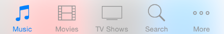
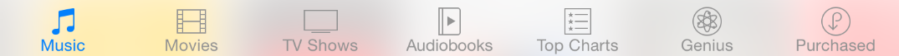
탭 바는;
반투명하다
항상 화면의 아래쪽에 나타난다.
아이폰에서는 한 번에 다섯개 이상 표시하지 않는다 (만약 그 이상의 탭이 있다면, 탭바는 그 중 네개를 표시하고, More탭을 더해서, 추가적인 탭들을 리스트에 보이도록 한다)
모든 방향에서 동일한 높이를 유지한다.
앱에 특화된 정보를 전달하기 위해 배지를 표시할 수 있다. 배지는 붉은 색 타원에 흰색으로 숫자나 느낌표가 적힌다.
탭 바를 이용해 동일한 세트의 데이터에 대한 다른 관점에 대한 엑세스를 제공하거나 앱의 전체적인 기능과 관련된 다른 서브테스크들에 엑세스 하기 위해 사용하라.
일반적으로, 앱 레벨에서 정보를 오거나이즈 하기 위해 탭 바를 사용하라. 탭 바는 정보 계층을 평면화 하기에 좋은 방법이며 한 번에 몇 종류의 개별 정보 카테고리 또는 모드를 제공하기 때문에 앱의 메인 뷰에 사용하기에 적합하게 만들어져 있다.
현재 모드나 화면의 요소들에 대해 동작하는 컨트롤을 제공하기 위해 탭 바를 사용하지 마라. 사용자를 위한 컨트롤을 제공해야 한다면, 대신 툴바를 사용하라( 툴바 사용가이드라인은 142 페이지.)
기능을 사용할 수 없을 때 탭을 제거하지 마라.만약 탭이 현재 컨텍스트에서 사용할 수 없는 당신 앱의 일부를 나타낸다면, 그 탭을 없애버리는 것보다는 사용불가 탭으로 표시하는 게 더 낫다. 만약 어떤 경우에는 탭을 제거하고 다른 경우에는 제거하지 않는다면, 당신의 앱은 예측불가능하고 안정적이지 못하게 만드는 것이다. 가장 좋은 해결방법은 모든 탭을 사용가능하게 만들고, 탭의 콘텐트를 사용할 수 없는 이유를 설명하는 것이다. 예를 들어, 사용자가 iOS 장치에 가진 노래가 한 곡도 없다면, Music 앱의 Songs 탭은 노래를 다운로드 하는 방법을 설명하는 것이다.
성가시지 않게 대화하기 위해서 탭 바 아이콘에 배지 넣는 것을 고려해보라. 특정 뷰나 모드와 연관된 새로운 정보가 있다는 것을 나타내기 위해 탭 바 아이콘 위에 배지를 표시할 수 있다.
아이패드에서, 스필릿 뷰 팬이나 팝오버안에도 탭 바를 사용할 수 있다. 탭이 해당 뷰의 콘텐트에 대해 스위치를 하거나 필터를 한다면 그렇게 해도 된다. 하지만, 많은 경우 팝오버 나 스필릿 뷰 팬의 아랫 부분에는 세그먼티드 컨트롤을 사용하는 것이 낫다. 세그먼티드 컨트롤의 모양이 팝오버나 스필릿 뷰 팬에 더 잘 어울리기 때문이다. (세그먼티드 컨트롤에 대한 자세한 정보는 Segmented Control 에서 보라.)
아이패드에서, 너무 많은 탭으로 탭바를 복잡하게 하지 마라. 탭 바에 너무 많은 탭을 넣는것은 물리적으로 사람들이 원하는 tab을 tap 하기 어렵게 만든다. 그리고 탭이 하나씩 더해질 때마다, 앱의 복잡도도 함께 올라간다. 일반적으로, 메인 뷰나 스필릿 뷰의 오른쪽 팬에 있는 탭의 개수를 7개로 제한하도록 노력해 보라. 팝오버나 스필릿 뷰의 왼쪽 팬에는 다섯개 정도의 탭이 잘 맞는다.
아이패드에서는 More 탭 만드는 것을 피하라. 아이패드 앱에서는 추가적인 탭을 나열하는 것만을 위해 화면을 바치는 것은 공간의 낭비이다.
Display the same tabs in each orientation of an iPad app to increase visual stability. In portrait orientation, the recommended seven tabs fit well across the width of the screen. In landscape orientation, you should center the same tabs along the width of the screen. This guidance also applies to the usage of a tab bar within a split view pane or a popover. For example, if you use a tab bar in a popover in portrait, it works well to display the same tabs in the left pane of a split view in landscape.
탭 바 아이콘
iOS는 테이블 35-2에 설명되어 있는 표준 아이콘들을 탭 바에 사용할 목적으로 제공한다. 커스텀 탭 바 아이콘을 디자인하는 방법을 배우고 싶으면 "Bar Button Icons"(페이지 212)를 보라. 탭 바 아이콘들은 tintColor 프라퍼티를 통해 색조를 낼 수 있다.
검색 바는 사용자로부터 텍스트를 입력받아서 검색을 위해 입력한다. (아래 플레이스 홀더 텍스트가 있는 것 처럼)
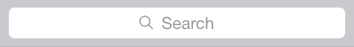
검색바는 다음과 같은 부가적인 요소들을 표시할 수 있다.
플레이스 홀더 텍스트 컨트롤의 기능- 예를 들어 “검색”- 을 나타내거나 사용자에게 검색하는 컨텍스트- 예를 들어 “Google”-를 상기시킬 수 있다.
북마크 버튼. 이 버튼은 사용자가 다시 검색을 할 때 사용할 수 있는 단축키를 제공한다.
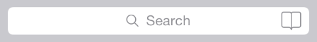
북마크 버튼은 검색 바에 사용자가 제공한 텍스트가 없거나 플레이스 홀터 텍스트가 없는 경우에만 볼 수 있다. 검색 바가 그런 텍스트가 있는 경우에는 지우기 버튼이 나타나서 그 텍스트를 지울 수 있도록 한다.
지우기 버튼. 대부분의 검색 바들은 검색 바의 콘텐트를 한 탭에 지울 수 있는 지우기 버튼을 제공한다.
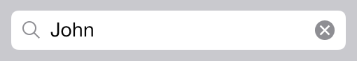
검색바어 플레이스 홀더 텍스트가 아닌 것을 하나라도 가지고 있으면, 사용자가 텍스트를 지울 수 있는 지우기 버튼을 제공한다. 플레이스 홀더가 아닌 텍스트가 없거나 사용자가 제공한 텍스트가 없다면, 지우기 버튼은 숨겨진다.
결과 리스트 아이콘. 이 아이콘은 검색 결과가 있다는 것을 지시한다. 사용자가 결과 리스트 아이콘을 탭 하면, 앱은 가장 최근의 검색 결과를 표시한다.
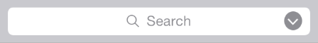
프롬프트. 프롬프트라고 하는, 설명문이 검색 바 위에 자리 잡을 수 있다. 프롬프트는 검색에 대한 소개나 앱-특정한 콘텍스트를 제공하는 짧은 구문을 표시한다.
앱에서 검색을 위해 검색 바를 사용하라. 표준 검색 바의 모양을 가지고 있지 않기 때문에 사용자들이 예상하지 못하기 때문에 검색을 하기 위한 곳에 텍스트 필드를 사용하지 마라.
iOS 7 이후로, 네비게이션 바에 검색 바를 보다 쉽게 넣기 위해서 UISearchDisplayController를 사용한다. Mails 앱에서 처럼, 서치 디스플레이 컨트롤러가 네비게이션 컨트롤러 내에 포함되어 있는 경우, 사용자가 검색을 시작하면 검색 바는 자동적으로 네비게이션 바로 전환된다.
당신 앱에서 검색이 차지하는 중요도를 나타내기 위해서 검색 바 스타일을 선택하라. 검색이 당신 앱의 중요한 기능이라면, prominent(두드러진) 스타일을 사용할 것이며; 사용자가 그다지 검색을 많이 하지 않는다면, minimal(최소화한) 스타일을 사용하기 원할 것이다.
Prominent 검색바 스타일 (Mails에서 볼 수 있는)
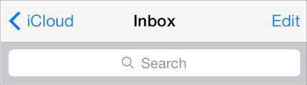
Minimal 검색바 스타일 (Music에서 볼 수 있는)
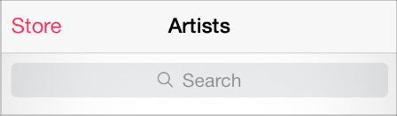
영역 바
영역 바(scope bar)—검색 바에서만 함께 사용할 수 있는 -는 사용자에게 검색의 영역을 정의 할 수 있도록 한다.
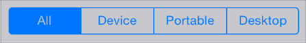
검색 바가 있다면, 영역 바는 그 주변에 나타난다. 영역 바는 당신이 지정한 검색 바와 동일한 외관을 가진다.
사용자가 검색하고 싶어할 것 같은 전형적이거나 깨끗하게 정의된 카테고리가 있다면 영역 바를 표시하는 것이 유용할 수 있다. 하지만, 사용자가 검색 결과에 대해 영역을 지정할 필요가 없도록 검색 결과를 향상시킬 필요가 있다.